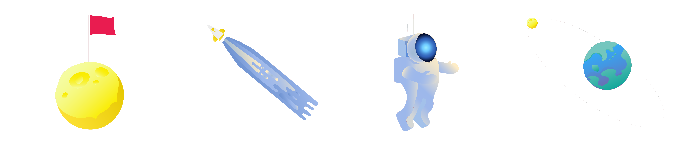
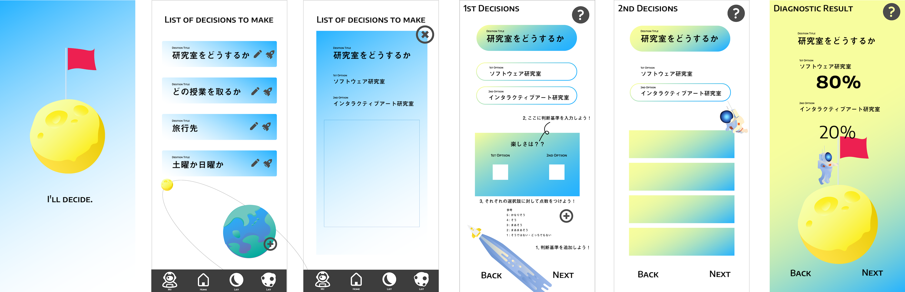

決断を困っている人のための2択専用アプリ
決断すべきことへの頭の整理、より良い決断をアシストする
決断を困っている人のための決断をアシストしてくれるアプリ
決断を困っている人、優柔不断な人
既存のアプリ調査
「決断を助けることを目的としてアプリは存在するが、その多くは、ランダムで選択を決めるなど、運命任せのものばかり
選択肢が多すぎると人は決断しにくくなる
「決断を助けることを目的としてアプリは存在するが、その多くは、ランダムで選択を決めるなど、運命任せのものばかり
納得いく決断ができるような2択に特化した決断アプリを制作
決断する場面では、2択ではない状況の方が多いが、複数選択肢ももまずは2択にすると解決しやすくなる
全体的なイメージを月面着陸に
冷静な判断ができるように最初は青系に、明るい決断ができるように希望を喚起する黄色を徐々に加えてくようなカラーデザインにした

-------------------
2021
制作期間 5ヶ月
使用ソフト Unity, Illustrator, Photoshop
使用言語 C#